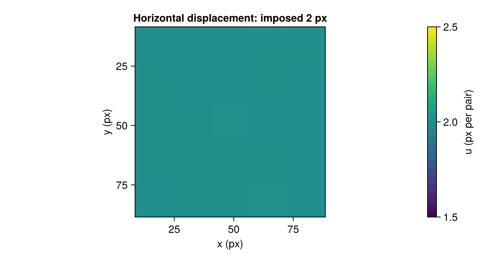

Measure one field from many image pairs
Use ensemble PIV when individual image pairs have weak correlation peaks and you want a representative field from a stationary recording. It adds the correlation planes before finding their peaks, rather than averaging vectors measured separately (Meinhart et al., 2000).
Try a small ensemble
These four synthetic pairs all have the same imposed motion: 2 pixels to the right and 1 pixel down. Each pair has a different particle pattern.
using Hammerhead, Random
using Hammerhead.SyntheticData
using CairoMakie
rng = MersenneTwister(741)
flow(x, y, z, t) = (2.0, 1.0, 0.0)
pairs = [begin
a, b, _, _ = generate_synthetic_piv_pair(flow, (96, 96), 1.0;
particle_density=0.08, background_noise=0.02, z_range=(-1.0, 1.0), rng)
(a, b)
end for _ in 1:4]
passes = multipass_parameters([32, 32]; padding=true,
apodization=:gauss, uod_enable=false)
result = run_piv_ensemble(pairs, passes; threaded=false, progress=false)
fig = Figure(size=(650, 350))
ax = Axis(fig[1, 1]; title="Horizontal displacement: imposed 2 px",
xlabel="x (px)", ylabel="y (px)", yreversed=true, aspect=DataAspect())
hm = heatmap!(ax, result.x, result.y, result.u'; colorrange=(1.5, 2.5))
Colorbar(fig[1, 2], hm; label="u (px per pair)")
fig
The map should lie near 2 px across the field. This is one pooled result from four pairs. A second pass uses the first pooled field to deform every pair's windows; it is not a second measurement of each pair.
Use your recording
Replace the generated matrices with ordered file pairs. Files are loaded again for each pass, so the driver need not retain the entire recording.
files = sort(filter(f -> endswith(lowercase(f), ".tif"),
readdir("micropiv"; join=true))) # acquisition order
pairs = image_pairs(files; mode=:paired)
result = run_piv_ensemble(pairs, passes;
preprocess=img -> highpass_filter(img; sigma=3))Choose a recording interval over which a representative displacement makes sense. If the flow changes, a pooled peak need not equal the mean of the individual vectors. For fluctuations, measure the pairs separately and follow From image pairs to flow statistics.
Compare separate subsets or increasing pair counts to see how the field moves. The estimate has stabilized when the field stops changing, not merely when the peak becomes clearer.
Add uncertainty or save the workflow
For correlation-statistics uncertainty, enable it on a repeated final window:
passes = multipass_parameters([64, 32, 16, 16];
padding=true, apodization=:gauss, final=(uncertainty=true,))
result = run_piv_ensemble(pairs, passes)The estimate describes noise in the combined correlation under a shared displacement assumption. It does not include physical flow fluctuations; see uncertainty quantification. The ensemble driver performs one sweep per pass and ignores max_iterations and convergence_tol. Repeating a window is an explicit additional pass.
To reuse these settings on another recording, save them as an ensemble recipe; see Save settings and reuse them.
For other configurations, see GPU sizing and execution or use run_piv_stereo_ensemble(cam1_pairs, cam2_pairs, dw1, dw2, passes) with calibrated dewarpers. Stereo ensembles also return one pooled field; use a stereo sequence for fluctuation statistics.